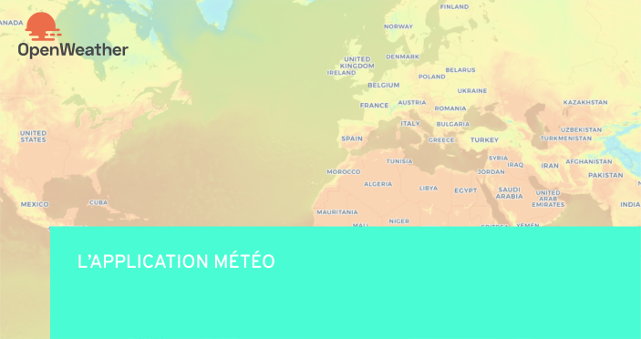
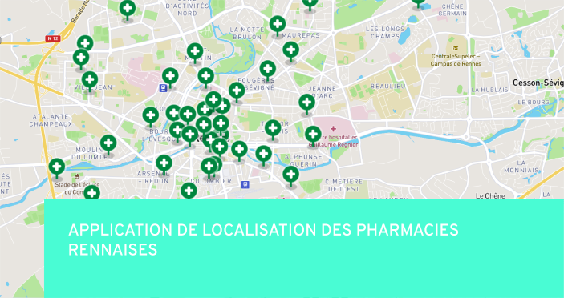
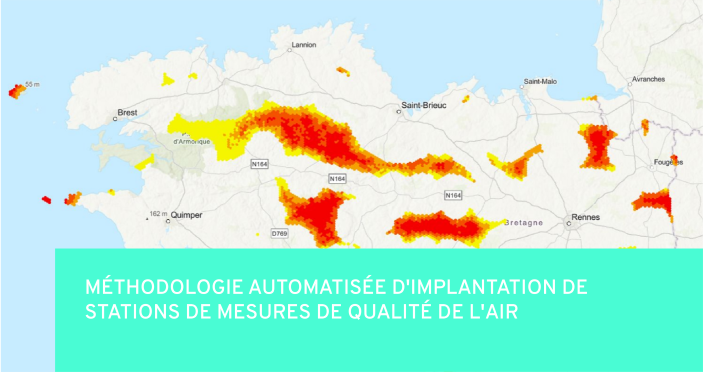
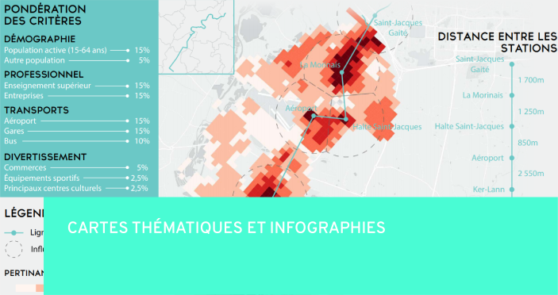

Mes projets personnels
L'application météo

Suite au projet professionnel réalisé pour l'entreprise Kermap, j'ai voulu tester l'intégralité des fonctionnalités proposé par les différentes API proposées par Openweather afin de créer un outil de visualisation des prévisions météo.
Pour en savoir plus, vous pouvez tester l'application.
PS : L'application n'étant pas terminée, quelques soucis de style peuvent exister. Afin de les éviter, réduisez le zoom de votre navigateur web.
#HTML/CSS/JavaScript #API #MapboxGL #C3js
Application de localisation des pharmacies rennaises

J'ai réalisé un outil cartographique permettant de visualiser les pharmacies rennaises, en utilisant les différentes fonctionnalités de la librairie javascript MapboxGL.js.
Pour en savoir plus, vous pouvez tester l'application.
#HTML/CSS/JavaScript #MapboxGL
Méthodologie automatisée d'implantation de stations de mesures de qualité de l'air

Dans le cadre d'un projet universitaire, nous avions comme objectif de créer une chaîne de traitement automatisée, en utilisant le ModelBuilder d'Arcgis Pro.
Nous avons donc expérimenté une méthode permettant de déterminé les espaces optimaux à l'implantation de stations de mesures de qualité de l'air dans la région Bretagne, en suivant les préconisations d'AirBreizh.
Le rapport final est disponible à la consultation.
#ArcgisPro #ModelBuilder
Cartes thématiques et infographies

Petite sélection de cartes thématiques et infographies permettant de mettre en avant mes compétences en graphisme et mon esprit de synthèse.
#QGIS #Adobe Illustrator #Flourish